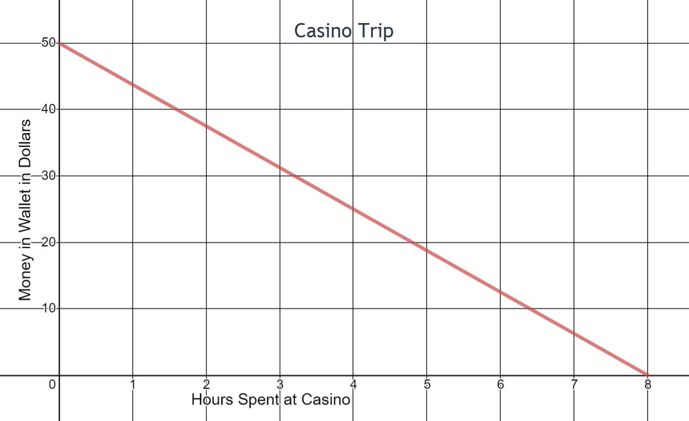

Linear Modeling and Logic Unit
Linear Modeling and Logic Review
- Write a linear equation for the cost of leasing a car with a $1000 down payment and a $360 per month charge.
- State and interpret the rate of change shown in the graph: 
- Write the equation of the line shown in the graph:
- The U-Haul in Knoxville charges $39.95 for a 20 foot moving truck plus $0.89 per mile that a customer drives the truck over one weekend. Write a linear equation that models the total cost of the truck for one weekend. Complete a table of values for the equation and graph the equation.
- Joseph spent his vacation time in Kalamazoo, Michigan, a distance of 552 miles from his home. He drives home at an average speed of 55 mph.
- What is the independent variable and the dependent variable in this scenario.
- Write an equation that models the distance Joseph is from home relative to the amount of time he has been driving.
- How far from home is Joseph if he has been driving for 7 hours?
- How long will it take Joseph to get home?
Independent variable - time in hours
Dependent variable - distance from home in hours
y = 552 - 55x
167 miles
approximately 10 hours
- A 3-month-old Australian Shepherd female puppy weighed 12 pounds. When she was 3 years old, she weighed 44 pounds. Find the average rate of change and explain its meaning within the context of this scenario.
- How many male doctors work at the hospital?
- Draw a Venn diagram to represent the following information: At a high school 70 students are involved in cross country or swimming. Fifty students run cross country and 40 students are on the swim team. How many students both run cross country and belong to the swim team?
- Test the validity of the following argument with a Venn diagram:
- Test the validity of the following argument with a Venn diagram.
- Test the validity of the following argument with a Venn diagram.
- The Wyoming toad has not been seen outside of captivity since 2002, so it must be extinct in the wild.
- After Will said that we should put more money into health and education, Warren responded by saying that he was surprised that Will hates our country so much that he wants to leave it defenseless by cutting military spending.
- Every time I go to sleep, the sun goes down. My sleeping must cause the sun to set.
- Jason told his friends that they should not swim in the river because there is a sign that says the river is contaminated by mercury.
- The sky is blue and grass is purple.
- Pellissippi State Community College has a campus in Blount County or a campus in Anderson County.
- Milk is a dairy product or yogurt is a dairy product.
- Dogs are in the canine family and cats are in the feline family.
- (Background information: Becky took out the kitchen trash and her mom gave her $1.00.) Statement by Becky’s mom: If you take out the trash, then I’ll give you a $5.00 allowance.
y = 360x + 1000
The money in the wallet decreases by $6.25 per hour spent at the casino
y = 5000x - 10000
Equation:
y = 0.89x + 39.95
0 |
39.95 |
|---|---|
5 |
44.40 |
10 |
48.85 |
20 |
57.75 |
25 |
62.20 |
30 |
66.65 |


The rate of change is equal to 1. The puppy was gaining approximately one pound per month.
150


20 students participated in both cross country and swimming
Premise: If an employee is regularly late, then the employee will be fired.
Premise: Sharon was fired.
Conclusion: Sharon was regularly late.
Is the argument valid or invalid?

The argument is invalid.
Premise: Some Pellissippi State students participate in the study abroad program.
Premise: Angela participated in the study abroad program.
Conclusion: Angela is a Pellissippi State student.
Is the argument valid or invalid?

The argument is invalid.
Premise: All red meat contains iron.
Premise: Prime rib is red meat
Conclusion: Prime rib contains iron.
Is the argument valid or invalid?

The argument is valid.
For problems 12-15, identify if a logical fallacy was used in the argument; explain.
Fallacy (Appeal to Ignorance); the toad may be good at hiding.
Fallacy (Straw Man); Will did not say he wanted to decrease military funding.
Fallacy (Correlation Implies Causation); The sun would still set even if the person stayed awake all night.
Reasonable argument
Determine the truth value for the statements in problems 16-20.
False
True
True
True
False